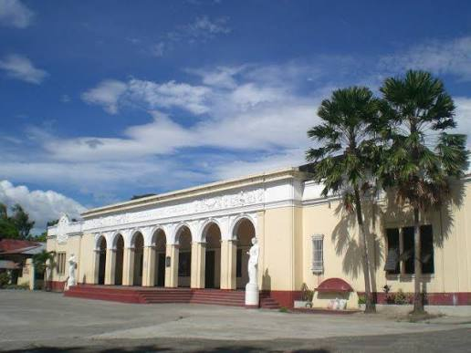

Our Mission
To provide quality, accessible education in a safe and supportive environment where every learner can grow academically, socially, and morally.

Negros Occidental High School was founded in 1902 and is a public secondary school in Bacolod City. For over a century it has welcomed students from across the province.
Our teachers and staff give every student a strong academic foundation, good values, and the confidence to take on college, work, or community service.
Tradition, Excellence, and Service guide everything we do, and every Nohsian carries them beyond graduation.
To provide quality, accessible education in a safe and supportive environment where every learner can grow academically, socially, and morally.
A community of competent, responsible, and caring Nohsians who contribute to a better Negros and a better Philippines.
The people who have led Negros Occidental High School since it was founded in 1902.
Later, Filipino educators took over the school administration as high school principals.